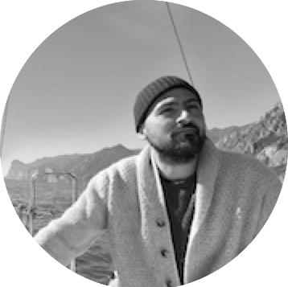

6
Guided lessons
Welcome To
"In Memory of Karl Zilles"
Guided lessons
Hands-on labs
Unified learning path
Understanding neuroanatomy is fundamental for interpreting structural and functional neuroimaging data and for uncovering the mechanisms by which the brain's organization supports behavior. This full-day educational course provides both a broad conceptual framework and hands-on practice for exploring neuroanatomy across multiple spatial and methodological scales.
The morning session introduces classical and modern approaches to analyzing neuroanatomy and its relation to brain function. It presents key concepts of human neuroanatomy clearly for a multidisciplinary audience, covering macroscopic landmarks, microscopic histology, cortical regions, subcortical nuclei, and large-scale fiber pathways. The relevance of anatomical knowledge for interpreting neuroimaging data will be emphasized. Participants will learn how different methods-including histology, chemical tracing, MRI, PET imaging, intracranial EEG, and brain stimulation-contribute to understanding neuroanatomy. Comparative perspectives are also provided to illustrate species differences and support translational research.
The afternoon session translates the concepts introduced during the morning lectures into a hands-on exploration of human white matter fiber pathways. Participants will learn tractography reconstructions alongside digital models of Klingler dissection. This multimodal, interactive data exploration reinforces morning concepts and anatomically grounded understanding and builds practical skills.
The course retains the title, "Neuroanatomy and Its Impact on Structural and Functional Imaging (In Memory of Karl Zilles)," to honor Dr. Karl Zilles, who organized neuroanatomy courses at OHBM almost every year. Maintaining this title continues his conviction that neuroimaging results cannot be understood without knowledge of brain anatomy, while inviting different speakers from last year ensures a creative course grounded in diverse perspectives.
Who this is for
This course targets neuroimaging researchers and clinicians who wish to better link their structural and functional data to underlying brain anatomy.
Experience level
It is especially designed for participants with basic to intermediate experience in MRI/PET/EEG/MEG who have not had extensive neuroanatomy training.
What they gain
Participants gain both conceptual background and hands-on practice with white-matter pathways.
A complete overview of the organizers, speakers, and hands-on contributors shaping the course.
National Institute for Physiological Sciences
Research Centre Julich
Fondazione Bruno Kessler
Indiana University
Universidad Autonoma de Madrid
University of Parma
National Institute for Physiological Sciences
McGill University
Mayo Clinic
INSERM U1208
Radboud Universiteit
Indiana University

Fondazione Bruno Kessler
Indiana University
Since its inception, OHBM has offered an educational course at its annual meeting, teaching researchers-from students to PIs-the importance of neuroanatomy for understanding the organization of human brains and interpreting non-invasive neuroimaging data.
The morning session will begin with three lectures focusing on localized brain structures and pathways: the thalamus (Cavada), the corpus callosum (Borra), and the visual system (Oishi). The following two lectures will address macro-scale neuroanatomy and large-scale brain organization, showing how PET imaging (Toussaint), intracranial EEG, and brain stimulation (Hermes) can be used to study global networks. The morning's last lecture (Kennedy) will provide a hierarchical view of cortical organization using quantitative tracing data.
The afternoon session will offer a hands-on exploration of human white matter neuroanatomy through tractography interaction and multimodal visualization. Participants will learn to identify major connectivity pathways in-vivo tractography (Forkel), disentangling neighboring or overlapping tracts to understand structural organization (Cacciola). In-vivo reconstructions will be related to ex-vivo 3D Klingler dissections (Vavassori) and to lesions from clinical cases linking structure and function (Zigiotto), supported by dedicated software for concurrent in- vivo/ex-vivo connectivity visualization (Avesani, Garyfallidis).
Overall, the course provides timely and essential training that bridges foundational neuroanatomical principles with contemporary neuroimaging practices, preparing researchers to navigate the increasingly complex landscape of human brain studies.
We allocate ~40% of the course to interactive engagement.
For questions about the course, please contact Prof. Hiromasa Takemura at htakemur@nips.ac.jp.